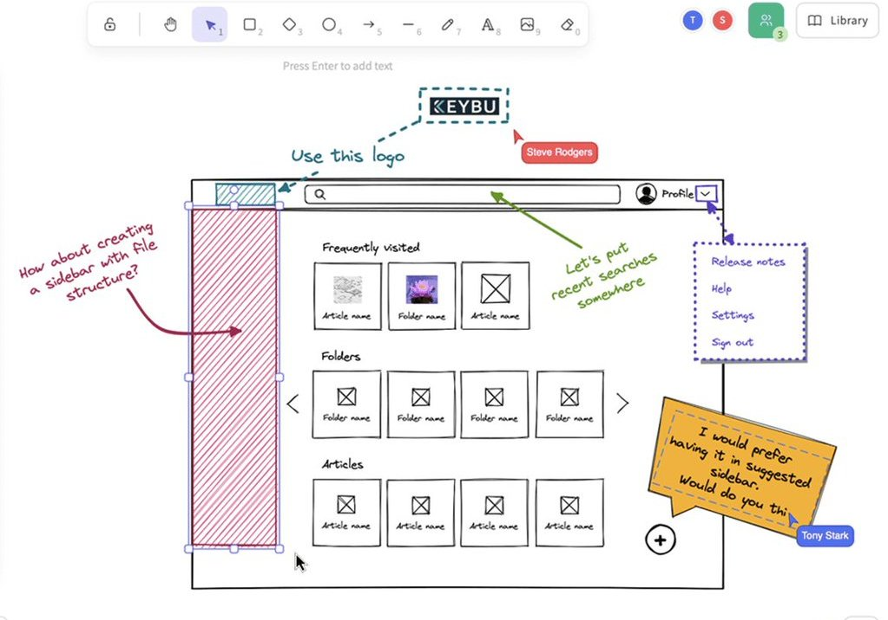
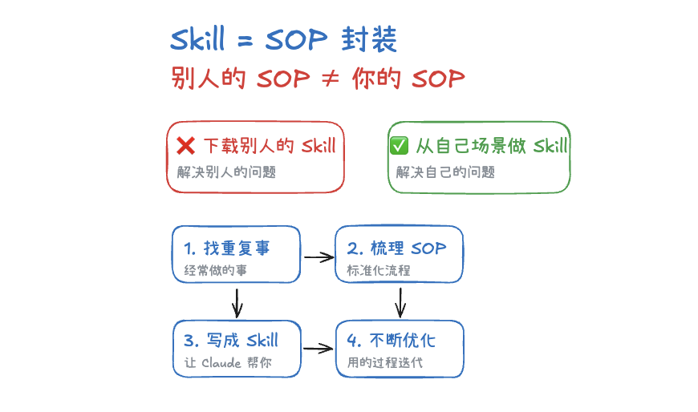

奶昔🥤
@realNyarime
@gkxspace 尝试用了iPad在网页版手绘，配一根Apple Pencil笔，省的下APP（之前一直是GoodNotes
不过老师能推荐一下表格神器吗，我想做两款友商竞品对比图，似乎都是psd模板偏多？


余温
@gkxspace
我发现有很多人不知道这个产品：Excalidraw。
它是一个手绘风格的白板工具，有种“随手画的”感觉，但又很清晰。
很适合做演示。手绘风格看起来不那么正式，别人反而更愿意看。
1、网页直接用。打开 https://t.co/dbVnPfryW8，画完导出图片，完事。
2、Obsidian 插件。如果你用 Obsidian https://t.co/kNeZYoPlxb